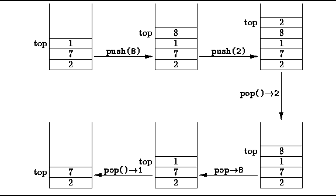

Data Structures and Algorithms
with Object-Oriented Design Patterns in Java
Data Structures and Algorithms
with Object-Oriented Design Patterns in Java
The simplest of all the containers is a stack .
A stack is a container which provides exactly one method, push,
for putting objects into the container;
and one method, pop,
for taking objects out of the container.
Figure  illustrates the basic idea.
illustrates the basic idea.

Figure: Basic stack operations.
Objects which are stored in a stack are kept in a pile. The last item put into the stack is a the top. When an item is pushed into a stack, it is placed at the top of the pile. When an item popped, it is always the top item which is removed. Since it is always the last item to be put into the stack that is the first item to be removed, a stack is a last-in, first-out or LIFO data structure.
In addition to the push and pop operations, the typical stack implementation also provides an accessor called getTop which returns the item at the top of the stack without removing it from the stack.
Program defines the Stack interface.
The Stack interface extends the Container interface
defined in Program .
Hence, it comprises all of the methods
inherited from Container plus the three methods
getTop, push, and pop.
When implementing a data structure, the first issue to be addressed is which foundational data structure(s) to use. Often, the choice is between an array-based implementation and a linked-list implementation. The next two sections present an array-based implementation of stacks followed by a linked-list implementation.
 Copyright © 1998 by Bruno R. Preiss, P.Eng. All rights reserved.
Copyright © 1998 by Bruno R. Preiss, P.Eng. All rights reserved.